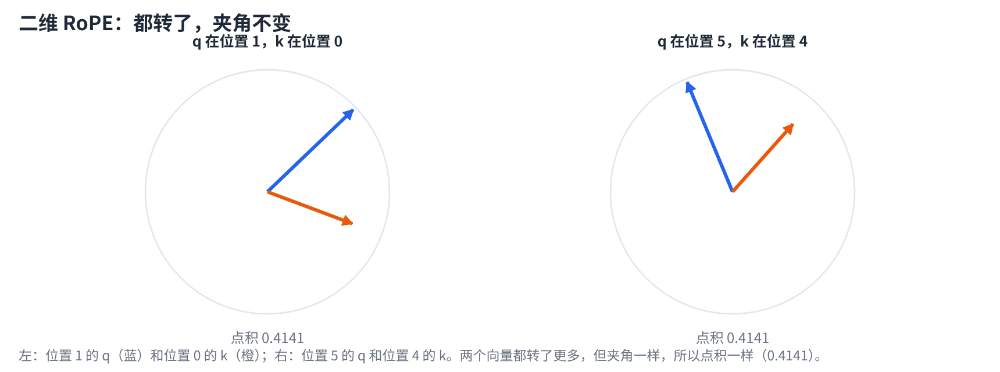
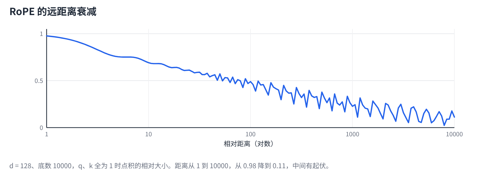
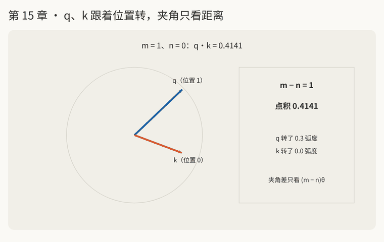

第 15 章 · RoPE：要分数只看相对距离，就把 q、k 按位置转一个角度
本地运行
git clone https://github.com/wikieden/beyond-transformer
cd beyond-transformer/code/notebooks
pip install jupyterlab torch numpy
jupyter lab ch15_rope.ipynb也可以下载后直接用 VS Code 打开 .ipynb 运行。需要 GPU 的章节在 Colab 里选「代码执行程序 → 更改运行时类型 → GPU」。
本章回答：前作的正弦位置编码是“加”在词向量上的，分数里绝对位置和相对位置搅在一起。如果想让 q_m·k_n 只依赖 m − n，应该怎么改？为什么答案是“把 q、k 各转 mθ、nθ”？d 维向量怎么转，为什么要用一串从快到慢的频率？实际代码为什么不乘旋转矩阵？RoPE 为什么会让远处的词分数变小？
讲解日期：2026-11-26 · 上一章：第 14 章 SwiGLU · 下一章：第 16 章 ALiBi 与 NoPE
对应原文：RoFormertransformer-deep-dive/materials/text/papers/rope-roformer-2104.09864.txt§3.1 式 (11) L225（目标：⟨f_q(x_m, m), f_k(x_n, n)⟩ = g(x_m, x_n, m − n)）、§3.2.1 二维的解 式 (12)–(13) L229–L260、§3.2.2 一般形式 式 (15)–(16) L261–L293、θ_i = 10000^{−2i/d} L329–L330、§3.4.2 高效实现 式 (34) L447–L461、§3.4.3 远距离衰减 L504–L522；CS336 a1 handout §3.5.3 rope L1076–L1114
本章缩写：RoPE = Rotary Position Embedding（旋转 / 位置 / 编码）；θ（读作“西塔”：每一步转的角度）；θ_i = 第 i 个平面的频率；m、n = q、k 所在的位置；R_m = 把向量转 mθ 的旋转矩阵；Re = 复数的实部；rotate_half（把相邻两维交换并给一个取负的操作）；λ_i = 2π/θ_i（第 i 个平面转一圈要几个位置，波长）。全部缩写见 附录 · 缩写与术语表
讲解
第一步：目标：分数只依赖相对距离（2026-11-26）
类比：两个人在操场上转圈跑步，速度一样。 无论跑了多久，他俩之间的夹角只取决于谁先出发了多久（出发时间差），而不是现在几点。把 q 和 k 都按“自己的位置 × θ”转一个角度，它们之间的夹角就只取决于位置差。
RoFormer §3.1 式 (11)（L225）写出目标：找一种编码 f，使得
注意力分数只能是内容和相对位置 m − n 的函数。前作第 14–16 章的正弦编码是加在 x 上的，展开 (x_m + p_m)ᵀW_Qᵀ W_K(x_n + p_n) 会出现 x_mᵀ…p_n 这样绝对位置和内容混在一起的项。
一句话：RoPE 的出发点是让 q_m·k_n 只依赖内容和 m − n，不依赖绝对位置。
第二步：二维的解：转 mθ（2026-11-26）
二维时（§3.2.1，式 12–13，L229–L260），解就是把 q 转 mθ、k 转 nθ：
因为旋转矩阵满足 \(R_a^\top R_b = R_{b-a}\)：
只剩 m − n。
数字演示（q = [1, 0.5]，k = [0.8, −0.3]，θ = 0.3）：
| m | n | m − n | q_m·k_n |
|---|---|---|---|
| 1 | 0 | 1 | 0.414105 |
| 5 | 4 | 1 | 0.414105 |
| 10 | 9 | 1 | 0.414105 |
| 3 | 0 | 3 | −0.144282 |
| 7 | 4 | 3 | −0.144282 |
相对距离一样，分数就一模一样，不管绝对位置是多少。

图 15-1 · 左：位置 1 的 q（蓝）和位置 0 的 k（橙）；右：位置 5 的 q 和位置 4 的 k。两个都转了，但夹角一样，所以点积一样一句话：二维时把 q 转 mθ、k 转 nθ，点积只剩 (m − n)θ 这个夹角。
第三步：d 维：拆成 d/2 个平面，频率从快到慢（2026-11-26）
d 维向量两两一组，拆成 d/2 个平面，每个平面用自己的频率转（§3.2.2，式 15，L261 起；θ_i 的取法 L329）：
| d = 8 | 平面 0 | 平面 1 | 平面 2 | 平面 3 |
|---|---|---|---|---|
| θ_i | 1 | 0.1 | 0.01 | 0.001 |
这和前作第 16 章“多档时钟”是同一组频率：快的平面区分相邻的几个位置，慢的平面区分远处的位置。d = 128 时，最快的平面转一圈只要 6.28 个位置，最慢的要 54,410 个位置。
和加法式编码的区别：RoPE 是乘在 q、k 上的，不碰 v，也不加在词向量上；每一层的注意力都重新转一次。
一句话：d 维拆成 d/2 个平面，第 i 个平面以 θ_i = 10000^{−2i/d} 转动，快的分辨近处、慢的分辨远处。
第四步：高效实现：不乘矩阵，逐元素乘 cos、sin（2026-11-26）
完整的旋转矩阵是分块对角的 d × d 矩阵，绝大部分是 0（式 15–16，L293 说“这样算不高效”）。§3.4.2 式 (34)（L447–L461）：
rotate_half 把每一对 (x₀, x₁) 变成 (−x₁, x₀)。cos、sin 按位置预先算好存成表，每次只做两次逐元素乘法和一次加法。
数字演示：x = [1, 2, …, 8]，位置 3：
| 写法 | 结果 |
|---|---|
| 逐元素 cos / sin | [−1.2722, −1.8389, 1.6839, 4.7079, 4.8178, 6.1473, 6.976, 8.021] |
| 分块旋转矩阵 | 完全一样（差 0） |
位置 3 时，最快的平面（θ = 1）转了 3 弧度，前两个数被转得面目全非；最慢的平面（θ = 0.001）只转了 0.003 弧度，最后两个数几乎没变。
注意配对方式：RoFormer 原文和 a1 是相邻两维配一对（x₀ 和 x₁）；Hugging Face 的 LLaMA 实现是前一半和后一半配对（x_i 和 x_{i+d/2}），rotate_half 的写法也跟着不同。两种都对，但权重和写法必须配套，混用会让预训练模型输出乱码。
场景代码：Hugging Face 式的 RoPE（真实写法；本书 chapter-code 只用 NumPy，这段没跑过）：
inv_freq = 1.0 / (10000 ** (torch.arange(0, d, 2).float() / d)) # θ_i
freqs = torch.outer(torch.arange(seq_len), inv_freq) # (ℓ, d/2)：每个位置每个平面的角度
emb = torch.cat([freqs, freqs], -1); cos, sin = emb.cos(), emb.sin()
def rotate_half(x):
x1, x2 = x[..., : d // 2], x[..., d // 2 :] # 前一半和后一半配对
return torch.cat([-x2, x1], -1)
q_rot, k_rot = q * cos + rotate_half(q) * sin, k * cos + rotate_half(k) * sin
a1 要你实现 RoPE 模块（§3.5.3），用相邻两维配对。
一句话：实际代码把旋转写成 x⊙cos + rotate_half(x)⊙sin，cos、sin 预先算表；配对方式（相邻或前后一半）要和权重配套。
第五步：远距离衰减（2026-11-26）
§3.4.3（L504–L522）证明：q、k 的点积写成 d/2 个复数项的和 Σ q_i k_i^* e^{i(m−n)θ_i}，相对距离 r 越大，这些项的相位越“乱”，和的上界越小。
数字演示（d = 128，q、k 全是 1 时，(1/(d/2))·|Σ_i e^{i r θ_i}|）：
| 相对距离 r | 0 | 1 | 10 | 100 | 1000 | 10000 |
|---|---|---|---|---|---|---|
| 平均相干程度 | 1.0000 | 0.9764 | 0.6913 | 0.4900 | 0.2266 | 0.1125 |
距离越远，各个平面转到的角度越分散，同样内容的 q、k 能拿到的分数越小：一种“近的词默认更重要”的倾向。这不是硬规定，模型可以学出很大的 q、k 去看远处。

图 15-2 · 横轴是相对距离（对数），纵轴是 q、k 全为 1 时 RoPE 点积的相对大小。距离从 1 到 10000，从 0.98 降到 0.11，中间有起伏一句话：相对距离越大，各平面的相位越分散，点积的上界越小，RoPE 自带“远处的词分数偏低”的倾向。
动画演示：q、k 跟着位置转，夹角只看距离

可交互版：animations/15-rope.html（滑块：q 的位置 m、k 的位置 n；勾选框“同时平移”）。
怎么看：
- 圆上的蓝箭头是转过 mθ 的 q，橙箭头是转过 nθ 的 k（第二步）；
- 拖 m 或 n：夹角变，右上角的点积跟着变；
- 勾上“同时平移”：m、n 一起加，两个箭头一起转，夹角和点积都不变。
练习与作答记录
题 1（第二步）：q = [1, 0]、k = [1, 0]、θ = π/2。位置 m = 2、n = 1 时，转过之后的 q、k 和点积各是多少？m = 5、n = 4 呢？
题 2（第三步）：d = 64、底数 10000，θ₀ 和 θ₃₁ 各是多少？最慢的平面转一圈大约要多少个位置？
题 3（第四步）：x = [1, 0, 0, 1]，位置 m 时用相邻配对的 rotate_half，写出 R_m x 的四个分量（用 cos、sin 表示，两个平面的频率是 θ₀、θ₁）。
口诀
两人同速转圈跑，夹角只看谁先出发；q 转 mθ、k 转 nθ，点积只剩 m 减 n。
两两一组成平面，频率从快到慢，一万的负 2i/d 次方。
不乘大矩阵：x 乘 cos，加转半个乘 sin；配对方式要和权重配套。
距离越远相位越乱，分数天生偏低。
本章复习卡片
必背：B43–B44（B43 RoPE 的目标、二维解与 d 维频率；B44 高效实现、配对方式与远距离衰减）。练习做完后，按答错、卡住的地方再补。
附录 · 延伸阅读
留给以后深入学习用，不影响本章主线。★ 是建议先读的。
推荐阅读
| 读什么 | 读哪里 | 读它为了什么 |
|---|---|---|
| ★ RoFormer（Su 等 2021） | §3.1–§3.2 L213–L293；§3.4.2 L447–L461；§3.4.3 L504–L522 | 推导、高效实现、远距离衰减 |
| ★ CS336 a1 handout | §3.5.3 L1076–L1114 | 作业里的 RoPE |
| 前作 第 14–16 章 位置编码 | 全部 | 正弦编码和多档时钟 |
| 《数学与实验统计》第 38 章 位置编码 | RoPE 一节 | 同一推导的另一种写法 |
| EleutherAI 博客“Rotary Embeddings: A Relative Revolution”（在线） | 全文 | 直观解释和实现对比 |
数学原理
- 旋转矩阵的性质：R_aᵀR_b = R_{b−a}，旋转不改变长度。
- 复数视角：二维向量看成复数 z，旋转 = 乘 e^{imθ}；Re[(q e^{imθ})(k e^{inθ})^] = Re[q k^ e^{i(m−n)θ}]。
- 远距离衰减：用 Abel 变换（分部求和）把 Σ h_i e^{irθ_i} 的模上界写成 (max|h_{i+1} − h_i|)·Σ|S_j|，后者随 r 变小。
- RoPE 只作用在 q、k：v 不转，所以加权求和的内容不受位置影响。
公式清单
| 公式 | 意思 |
|---|---|
| \(\langle f_q(x_m, m), f_k(x_n, n)\rangle = g(x_m, x_n, m - n)\) | 目标（式 11） |
| \(f(x, m) = R_{m\theta}Wx\) | 二维的解（式 13） |
| \(\theta_i = 10000^{-2i/d}\) | 各平面的频率 |
| \(R_m x = x\odot\cos m\Theta + \text{rotate\_half}(x)\odot\sin m\Theta\) | 高效实现（式 34） |
| \(\lambda_i = 2\pi/\theta_i\) | 波长 |
代码对照：把本章的数字用代码算一遍
NumPy。代码在仓库本地
beyond-transformer/solutions/chapter-code/ch15_rope.py，配套测试tests/test_ch15.py，notebook 在notebooks/ch15_rope.ipynb：
bash cd beyond-transformer/solutions/chapter-code uv run python ch15_rope.py uv run pytest tests/test_ch15.py
讲义 ↔ 代码：
| 讲义 | 公式 | 写法 | 跑出来 |
|---|---|---|---|
| 第二步 二维 | R_mθ q · R_nθ k | score_2d(m, n) |
差 1 都是 0.414105 |
| 第三步 频率 | 10000^{−2i/d} | freqs(8)、wavelengths() |
[1, 0.1, 0.01, 0.001]；6.28 … 54,410 |
| 第四步 高效实现 | 式 (34) | rope(x, 3) vs rope_matrix(x, 3) |
完全一样 |
| 第五步 衰减 | Σe^{irθ} |
关键几行：
th = np.repeat(freqs(d, base), 2) * pos # 每个平面的角度，相邻两维共用
xr[0::2], xr[1::2] = -x[1::2], x[0::2] # rotate_half：相邻两维配对
return x * np.cos(th) + xr * np.sin(th) # 式 (34)
代码里才看得到的 2 件事：
np.repeat决定了配对方式：重复成 [θ₀, θ₀, θ₁, θ₁, …] 就是相邻配对；Hugging Face 用cat([freqs, freqs])得到 [θ₀, θ₁, …, θ₀, θ₁, …]，是前后一半配对。- 测试里还核对了一般的 d 维：随机的 q、k，位置 (7, 4) 和 (13, 10) 的点积一样；这是“只依赖 m − n”的 d 维版本。在真实模型上比较各种位置编码的长度外推是里程碑 T-M3。
自己改一改（不影响练习答案）：
- 把
decay_curve的底数从 10000 改成 500000（LLaMA 3 用的值），衰减变慢还是变快？ - 把
score_2d的 θ 改成 2π，会发生什么？为什么频率不能太大？